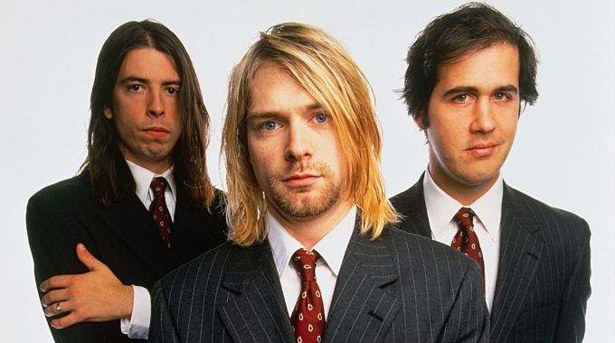
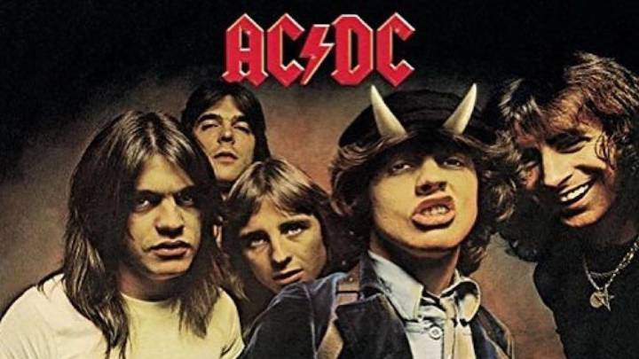
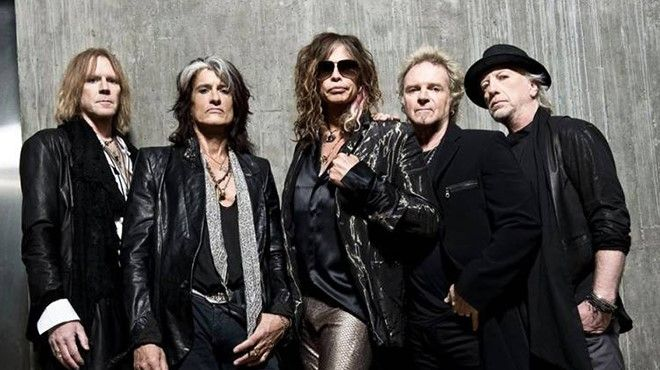

Banda de rock estadounidense formada hacia 1986 por Kurt Cobain y Krist Novoselic. A pesar de su corta existencia como grupo, y del suicidio de Cobain en 1994, su música cosechó un tremendo éxito en todo el mundo, hasta el punto de que Nirvana fue considerada una de las mejores bandas de rock de la época y la abanderada del movimiento Grunge.

AC/DC es una banda de hard rock británica-australiana, formada en 1973 en Australia por los hermanos escoceses Malcolm y Angus Young.Con cuatro décadas de trayectoria, la banda ha superado los cambios en la alineación, la pérdida de históricos miembros, la controversia sobre su imagen y letras, y el constante cambio de las tendencias musicales, para convertirse en la actualidad en una de las bandas más importantes e influyentes de la historia y con mayor capacidad de convocatoria.

Aerosmith es una banda estadounidense de hard rock.mTambién conocidos como "Los chicos malos de Boston", o "Toxic Twins", apelativo por el que se conoce a sus dos líderes por su histórica adicción a las drogas. Su sonido agresivamente rítmico tiene raíces en el blues y además contribuyó a establecer el sonido del hard rock y Pop rock entre los años 1981 y 1990. La banda se fundó en Boston, Massachusetts, en 1970.